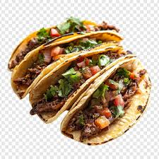

Taco

Description
Beef Tacos–the old school beef mince way!!! With juicy seasoned ground beef taco meat and crispy shells, this taco recipe is made with a simple yet flavour packed homemade taco seasoning that truly tastes like store bought. PS I won’t judge if you use tortillas instead
Ingredients
Beef Tacos
- 1 tablespoon oil
- 2 garlic cloves(minced)
- 1 onion(finely chopped)
- 1 pound ground beef
- 2 tablespoons tomato paste
- 1/4 cup water
Taco Seasoning
- 1/4 teaspoon black pepper
- 1 teaspoon salt
- 1 teaspoon garlic powder
- 1 teaspoon onion powder
- 1 teaspoon dried oregano
- 2 teaspoons cumin powder
- 2 teaspoons paprika
Toppings
- Shredded cheese
- Shredded iceberg lettuce
- 2 tomatoes(chopped)
- 1/2 red or white onion(chopped)
- Sour cream
- Taco sauce(optional)
Instructions
- Preheat oven to 180C/350F.
- Heat oil in a large skillet over high heat. Add garlic and onion – cook 2 minutes until golden.
- Add beef and cook for 2 minutes, breaking it up as you go, until it changes from red to light brown.
- Add Taco Seasonings and cook for 2 minutes until beef is cooked through.
- Add tomato paste and water. Cook for 1 minute or until water is evaporated and you’re left with a juicy not not watery beef filling.
- Serve tacos hot, straight out of the oven. Lay out toppings and sauces of choice on the table and let everyone assemble their own!
Home